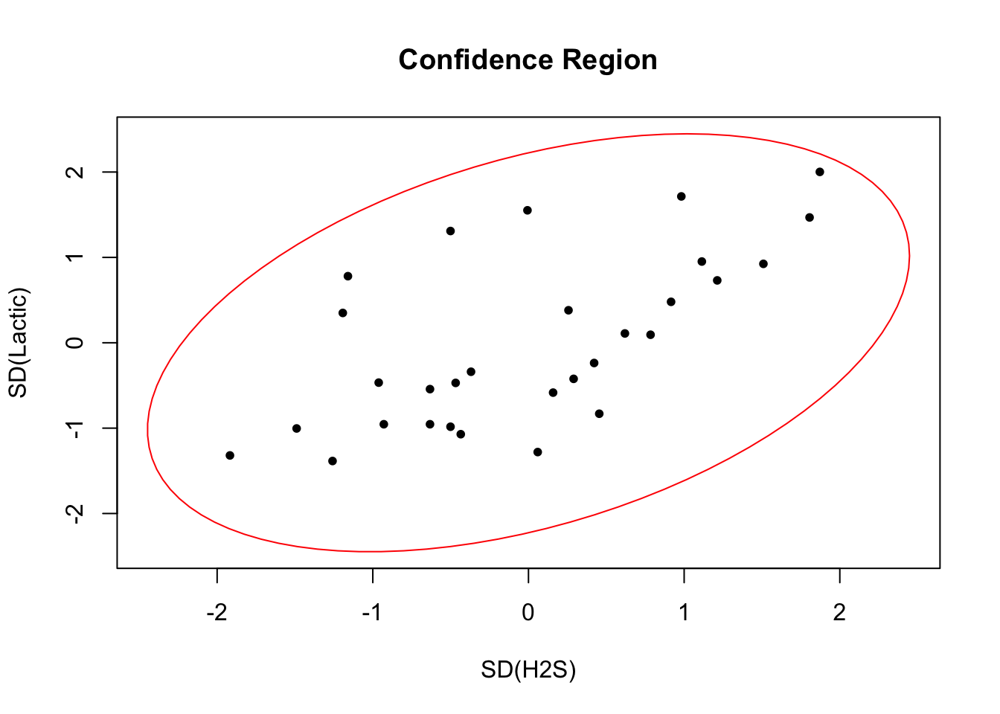

We begin by fitting a linear model based on the Acetic , H2S , Lactic covariates to see how they relate to the taste of cheddar.
##
## Call:
## lm(formula = taste ~ Acetic + H2S + Lactic)
##
## Residuals:
## Min 1Q Median 3Q Max
## -17.390 -6.612 -1.009 4.908 25.449
##
## Coefficients:
## Estimate Std. Error t value Pr(>|t|)
## (Intercept) -28.8768 19.7354 -1.463 0.15540
## Acetic 0.3277 4.4598 0.073 0.94198
## H2S 3.9118 1.2484 3.133 0.00425 **
## Lactic 19.6705 8.6291 2.280 0.03108 *
## ---
## Signif. codes: 0 '***' 0.001 '**' 0.01 '*' 0.05 '.' 0.1 ' ' 1
##
## Residual standard error: 10.13 on 26 degrees of freedom
## Multiple R-squared: 0.6518, Adjusted R-squared: 0.6116
## F-statistic: 16.22 on 3 and 26 DF, p-value: 3.81e-06Next we fit a second model with the Acetic , H2S trandformed to their original scale through the exp trandfomration appplied to both.
##
## Call:
## lm(formula = taste ~ exp(Acetic) + exp(H2S) + Lactic)
##
## Residuals:
## Min 1Q Median 3Q Max
## -16.209 -7.266 -1.651 7.385 26.335
##
## Coefficients:
## Estimate Std. Error t value Pr(>|t|)
## (Intercept) -1.897e+01 1.127e+01 -1.684 0.1042
## exp(Acetic) 1.891e-02 1.562e-02 1.210 0.2371
## exp(H2S) 7.668e-04 4.188e-04 1.831 0.0786 .
## Lactic 2.501e+01 9.062e+00 2.760 0.0105 *
## ---
## Signif. codes: 0 '***' 0.001 '**' 0.01 '*' 0.05 '.' 0.1 ' ' 1
##
## Residual standard error: 11.19 on 26 degrees of freedom
## Multiple R-squared: 0.5754, Adjusted R-squared: 0.5264
## F-statistic: 11.75 on 3 and 26 DF, p-value: 4.746e-05If we wanted to compare the models we wouldn’t use an F-test because the two models are not nested, and the covariates in model two are not a subset or a subspace of the variables in model 1. Instead we use \(R^2\) to get a feel for how well the models fit the data, and model judging by \(R^2\) model 1 provides a better fit.
summary(m1)$r.squared #model 1## [1] 0.6517747summary(m2)$r.squared #model 2## [1] 0.575407If we increase H2S by 0.01 the change in taste, all else being equal, is the change times the estimated coef.
## H2S
## 0.03911841To get a percent change in H2S when it is transformed by an exp, corresponding to a 0.01 addetive change on the original scale we would take the ratio of \(exp(H2S + 0.01) / exp(H2S)\) and multiply by 100.
(exp(0.01) - 1)*100 #About 1% change## [1] 1.005017To derive the confidence intervals for the first model we compute the standard errors and use t-value assosiated with type I error rate of 5%.
confint(m1)## 2.5 % 97.5 %
## (Intercept) -69.443503 11.689964
## Acetic -8.839420 9.494902
## H2S 1.345656 6.478026
## Lactic 1.933267 37.407820Next we plot the confidence region for the H2S , Lactic variables which produces a region bounded by an ellipse.
